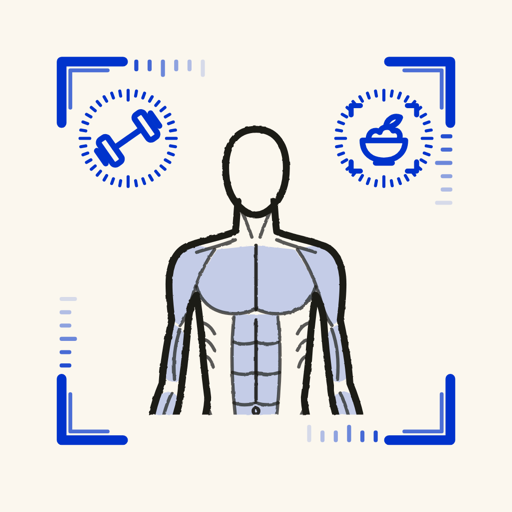
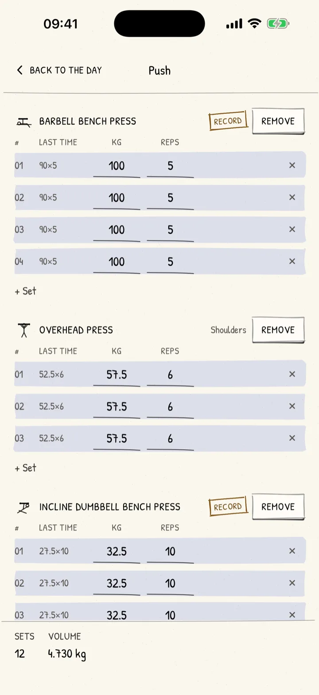
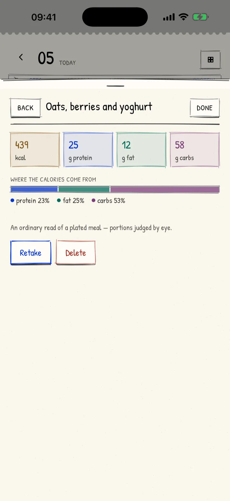
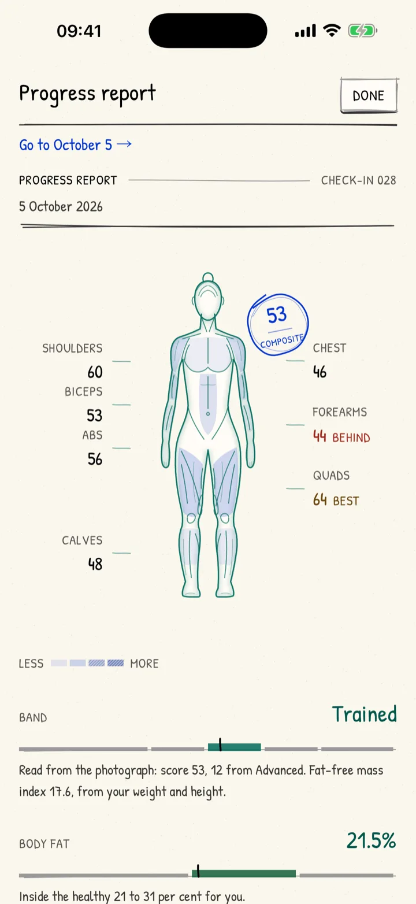
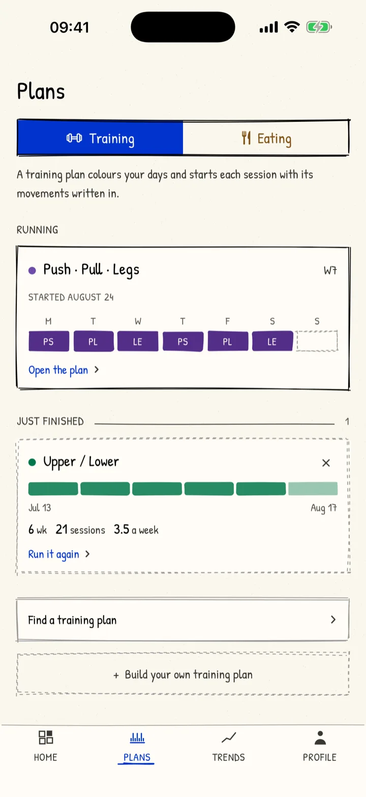
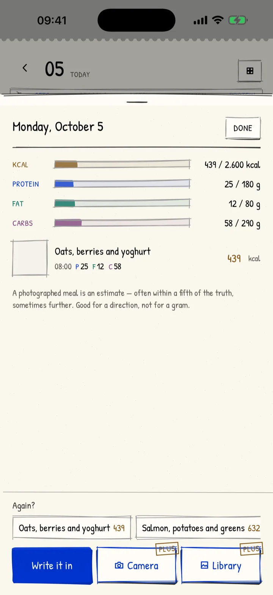
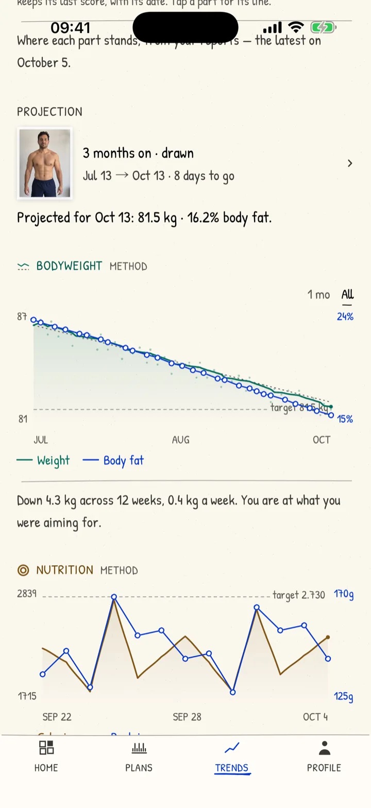

Train, eat, and see it work — in one app.
Log your workouts, track your meals, and read your progress from a photo. MassFrame connects the three, so you can see what's actually changing your body.
The invitation link goes here as soon as the beta opens.



Three parts of one picture
Training
- Plans matched to the days you really have, at the gym, at home or with dumbbells
- Every session starts with its movements written in and last time's numbers beside them
- Strength curves, estimated maxes and records for each lift

Nutrition
- Calorie and macro targets worked out from your body and the phase you're in — cut, recomp, maintain or lean bulk
- Photograph a meal and it's read for calories and macros, or write it in yourself
- Each day's plate against its targets, at a glance

Your body
- A progress report from one photo: body fat, lean mass and each muscle group scored
- Your weight's trend, and a projection of where you're heading in three, six or twelve months
- A drawing of your future body, and two check-ins side by side

How they work together
-
1
Your body and your goal
set your plan and your daily targets.
-
2
You train and you eat
and the app keeps the sets and the plates.
-
3
A check-in photo
shows what actually changed: fat, muscle, weight.
-
4
Your targets follow
your body as it changes, and the next block begins.
What MassFrame+ adds
Logging, plans that fit your week, eating targets, meals you write in, progress reports and a drawing of your future self are free. MassFrame+ adds these, by the month or once for life.
-
Snap a meal, get the macros
A photo is read for calories and macros in about ten seconds.
-
Every lift, its own curve
Estimated one-rep max, records and progress for each movement.
-
Widgets on Home and Lock Screen
Today's plate, the plan's week and your body, at a glance.
-
Every training plan
Strength, size, specialisation and programmes for a busy week.
-
Compare any two check-ins
Two photos side by side, months apart, with what changed.
-
Progress report as a PDF
A period of training, body and eating, ready to print or send to a coach.
Private by design
No account and no server holding your data: everything stays in the app on your phone. A photo leaves only when you ask for it to be read, after you've agreed once, and that can be turned off any time. Purchases go through Apple, and Apple Health is never used for advertising or sold.
MassFrame gives estimates, not medical advice — it isn't a coach, a dietitian or a doctor.